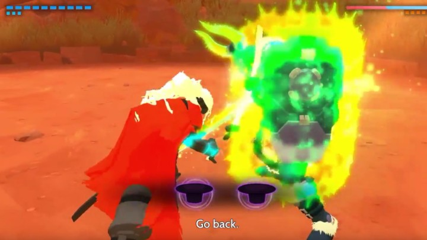
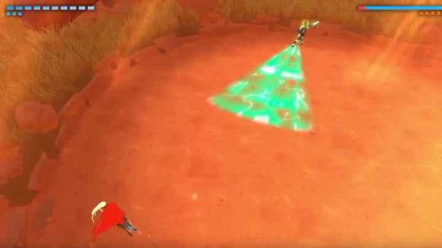
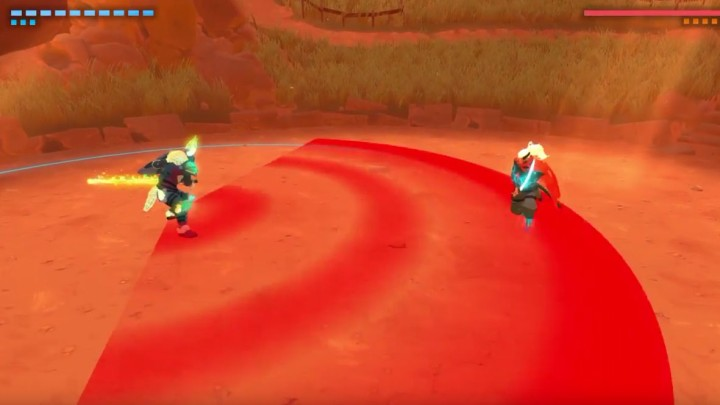
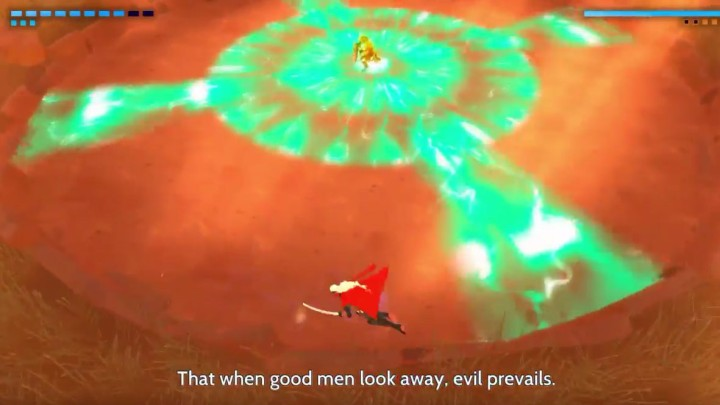
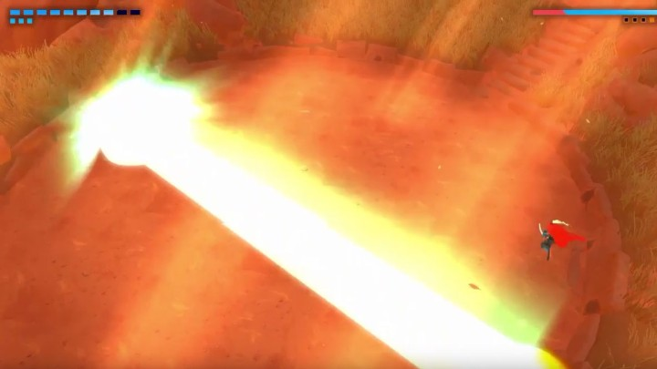
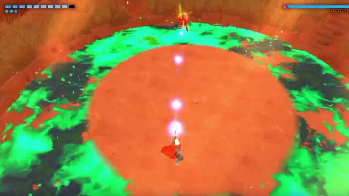

As always let’s start with story. The Hand was the general who led the forces to catch you.He now stands in his arena standing guard with only his son as company. When it comes to the design I have to say I am slightly disapointed. He just looks and talks like the most generic knight ever. I will say that the way the energy charges up on his armor does have a nice look to it. Let’s move onto the fight. The Hand will charge up energy to different parts of his armour. If his shield is glowing it means he will reflect your own shots back at you (you can actually play ping pong with The Hand like this if you parry his reflected shots), because of this the fight is primmarily in melee range. Unfortunately the hand will also block you attacks which can sometimes trigger a quick time event.
He will also ocasionally charge up and fires shockwaves. During this time he will have shield down allowing you to shoot him.
The parts of the fight where the hand truly shines is his melee phase as he is the first boss to delay his melee strikes so relying on the flashes when he attacks is no longer the most viable option. He will create shockwaves as well during melee phase.He will often triger grabs during fight so make sure to follow the on screen propmpts. He will often create waves as well during the fight which are preceded by a red hologram.
The second phase is par for the course, longer melee strings and larger shockwaves, the usual. The third phase starts off with The Hand running to the center and starting to glow. He will then create four rotating shockwaves. Just run ahead of them and you will be fine.
The fourth phase is also the easiest because for some reason he decides to throw away the shield that makes him invulnerable. You are now able to shoot at him constantly, so just run away from while shooting and he won’t be able to touch you.

The only thing you have to be worried about in this phase is that he is now able to shoot lasers at you. They are slightly difficult to avoid so make sure you dodge at the last second.
The Hand’s final phase begins with him shrinking the arena by creating a large toxic ring around the center. This makes him slightly harder to dodge as you have a very large chance of dodging into the ring.Other than that the ranged phase is exactly the same as the last one.
His final duel phase is where he uses his desperation attack. He will start the longest melee string ever and the entire time he is glowing. The first few strikes are incredibly fast and become increasingly delayed near the end, his final strike being a shockwave. As soon as he finishes the attack kill him with a quick melee combo.